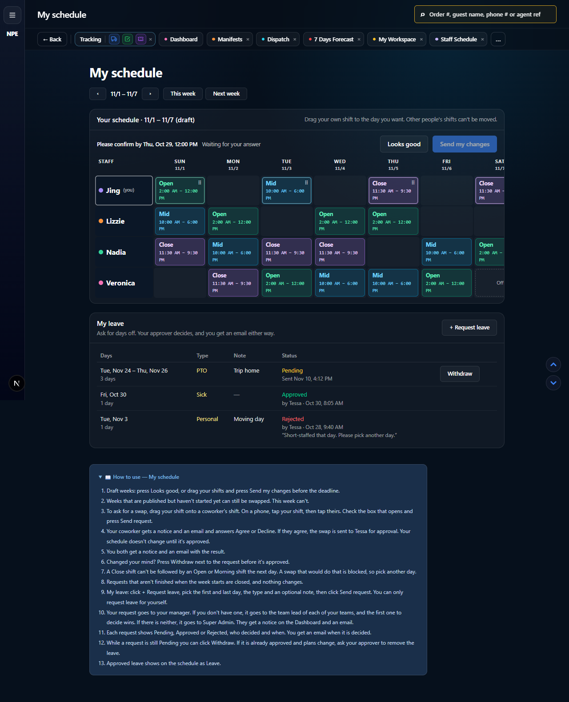
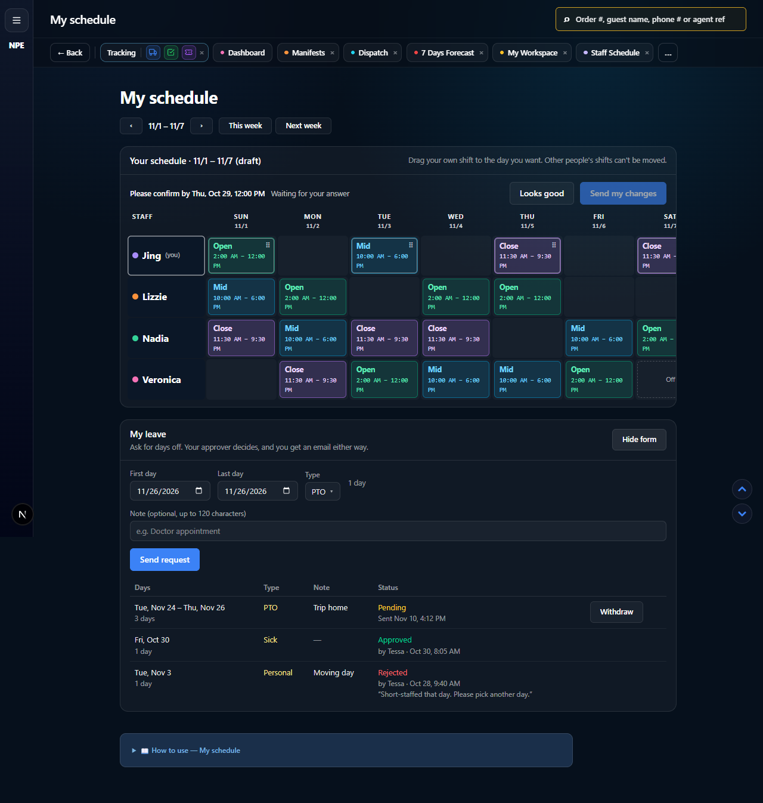
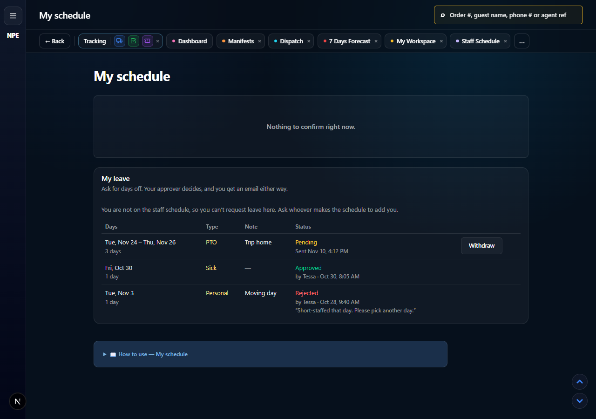
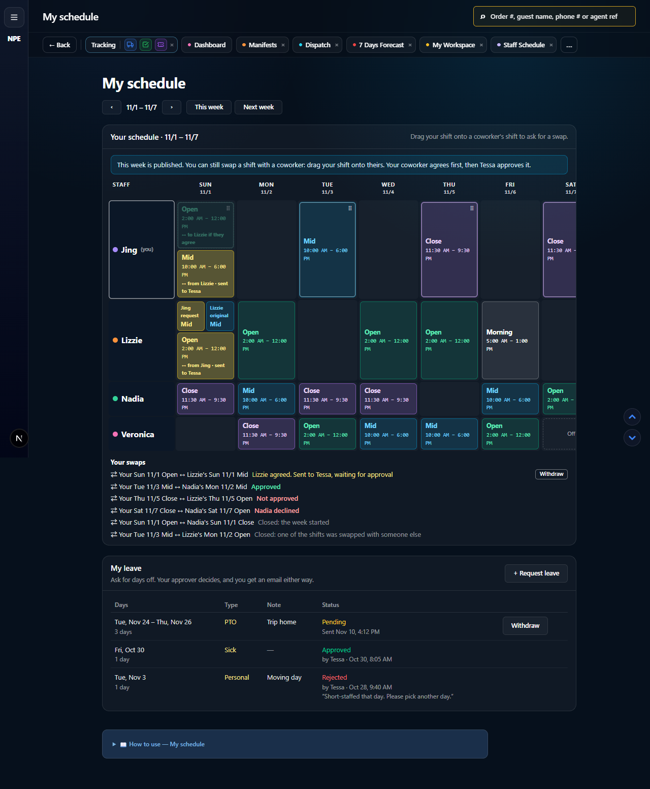
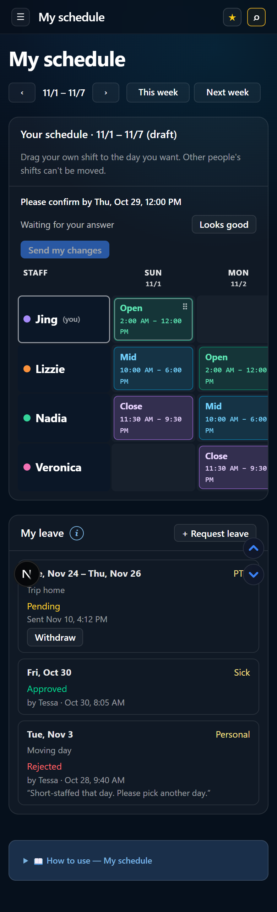
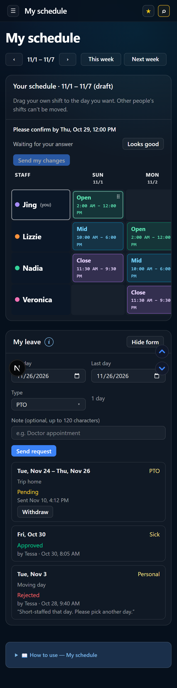
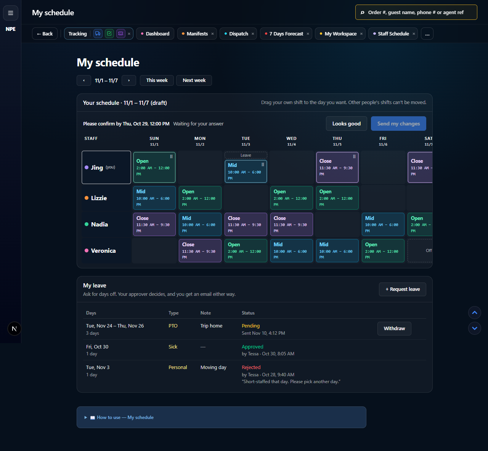

点侧栏 My schedule、Dashboard 排班块的 My schedule →、或 Staff Schedule 页头的 My schedule → 都进这一页（/my-schedule，11-19 上线）。下面的图都是真页面截图：本地跑 ops 代码，接模拟数据（假名字 Jing、Lizzie、Nadia、Veronica，审批人 Tessa），没连生产。
这一页的前端代码，线上 main 和 G382 分支一模一样（my-schedule-view.tsx、confirm-view.tsx、leave-view.tsx、lib/leave-api.ts、lib/schedule-confirm-api.ts 都没改）。G382 上线后看到的不同，只来自后端多出来的数据（按小时的假）和通知跳转。第 3 节逐条写。截图左下角黑底白字的 N 是本地开发模式的标记，线上没有。






| 块 | 看到什么 / 键 | 数据从哪来 | 到哪去 | 代码 |
|---|---|---|---|---|
| 入口 | 侧栏 Operations 下 Staff Schedule 下面一项 My schedule；Dashboard 排班块 My schedule →；Staff Schedule 页头 My schedule →；旧网址 /schedule/confirm 自动跳过来。要有 schedule.view，可见性跟 Confirm your schedule 同一个开关。 | — | — | nav-config.ts:178-186 schedule-section.tsx:176-184 schedule-view.tsx:1176-1182 app/schedule/confirm/page.tsx:19 staff-permissions.ts:61 app/my-schedule/page.tsx:13 |
| 换周 | ‹ 11/1 – 11/7 › This week Next week；换周 = 换网址整页重开，有没发的改动先拦下问。 | 网址 ?week= | — | confirm-view.tsx:849-858, 871-914 |
| Your schedule（草稿周） | 标题带 (draft)；Please confirm by …、状态字；Looks good（白）、Send my changes（蓝，提交）。全员整周的班；自己的班能拖到别的天，自己 off 的格子能 + Work this day。改动先攒在下面 Your changes，按 Send 才发。 | GET /api/schedule/confirmation?week=（后端 get_confirmation：全员的班、我的回应、我的请求、别人找我换班） | POST …/confirmation/accept、…/confirmation/changes ⇒ 排班的人在 Staff Schedule（G382 后在总览）的改班请求里批 | confirm-view.tsx:520-690, 778-812 schedule-confirm-api.ts:159-163 |
| Your schedule（已发布、没开始的周） | 蓝框 This week is published. You can still swap…；只能把自己的班拖到同事的班上提换班 ⇒ 弹框确认 ⇒ 同事 Agree / Decline ⇒ Tessa 批。Your swaps 列各状态，没批前可 Withdraw。晚接早的换班挡下、红字。 | 同上 | 同事收到站内提醒 + 邮件；批准后改到排班 | confirm-view.tsx:526-560, 733-776, 963-1060 schedule-confirm-api.ts:246-250 |
| 假在班表上 | 自己的假：格子里虚线框 Leave；别人的假：Off（员工看不到别人是什么假）。 | 同一个接口的 time_off，后端只给 {employee_id, date, kind}，别人那条 kind 是 null | — | confirm-view.tsx:1263-1294 config.ts:79-83 后端 services/schedule.py:2651-2652 |
| My leave | 右上 + Request leave / Hide form；表单：First day、Last day、Type（PTO / Sick / Personal）、天数、Note、Send request（蓝）。下面我的申请表：Days / Type / Note / Status，Pending 可 Withdraw（再问一次）。只能整天请。 | GET /api/schedule/leave-requests/mine | POST /api/schedule/leave-requests ⇒ 我的 manager / team lead / Super Admin 收到 Dashboard 提醒 + 邮件；…/{id}/withdraw | leave-view.tsx:202-258, 300-410, 505-600 lib/leave-api.ts:16-20, 83 |
| How to use | 折叠；前 8 条讲班表 / 换班，后 5 条讲请假。手机上本来就在最底。 | — | — | confirm-view.tsx:816-839 leave-view.tsx:190-196 |
| 情况 | 页面显示 | 代码 |
|---|---|---|
| 这个账号不在排班名单上（排班名单没连到这个账号） | 班表：后端 404 You are not on the schedule roster. ⇒ 页面只写 Nothing to confirm right now.；My leave：You are not on the staff schedule, so you can't request leave here. Ask whoever makes the schedule to add you.，没有 + Request leave。 | 后端 routers/schedule.py:810-816 confirm-view.tsx:479-483 schedule-confirm-api.ts:152-157 leave-view.tsx:250-256 |
| 没有 HR 档案 | 这一页不读 HR 档案，靠排班名单对人（排班名单里的人连着登录账号）。有 HR 档案、但不在排班名单的人，按上一行显示。 | 后端 routers/schedule.py:810-816（只查 schedule_employees.admin_user_id） |
| 这一周还没建（没排班） | 后端 404 This week's schedule isn't ready yet. ⇒ 同样只写 Nothing to confirm right now.；My leave 照常能用。 | 后端 services/schedule.py:2502-2510 confirm-view.tsx:479-483, 836-838 |
| 草稿周 | 员工看得到（这一页就是确认草稿用的），标题带 (draft)。这点跟 Staff Schedule 不同，Staff Schedule 的草稿周员工看不到。 | confirm-view.tsx:520-525 后端 services/schedule.py:2502-2504 |
| 过了周四 12 点 / 已发布 / 周已开始 | 蓝框分别写 The deadline (…) has passed… / This week is published, so requests are closed… / This week has started, so requests are closed.，键都不出。 | confirm-view.tsx:506-513, 549-558 |
| 请假接口读不到（403 / 404） | 整块 My leave 不出。 | leave-view.tsx:220-227 |
G382 = 前端 task/g382-fe（d8455e8c）+ ab 写的 Settings › HR › Schedule 总览 + 后端 task/g382-hr-schedule。My schedule 的前端代码没改，所以版面、键、文字都不变；下面只有两处会看到不同。
| 项目 | 现在 | G382 后 | 代码 |
|---|---|---|---|
| 版面、各个键、文字 | 见第 1、2 节 | 不变 | 这一页的文件在两个分支一样 |
| 员工请假入口 | 已经在 My schedule 的 My leave（11-19 从 Staff Schedule › Leave 搬来的） | 不变 | leave-view.tsx:202-258 |
| 按小时请假（员工自己申请） | 表单只有 First day / Last day，只能整天 | 不变：后端开始收 start_time / end_time，但这一页的表单不送，员工在这里还是只能整天请。按小时的假只能由主管在总览上录、或批的时候改成按小时。 | leave-view.tsx:315-345 后端 interface.md §3 |
| 请假类别 | 下拉写死三个：PTO / Sick / Personal；申请表 Type 列也照这三个名字显示 | 前端不变，但跟总览对不上：总览和后端把 personal 叫 Leave（Q8），管类别的人还能加新类别；这一页的下拉仍写 Personal，也看不到新加的类别 | lib/leave-api.ts:16-24 leave-view.tsx:349-362, 550, 576 |
| 按小时的假在班表上 | 现在没有按小时的假 | 有了以后：那一格照旧出班卡，上面多一条虚线小框 Leave，不写几点到几点（这一页的接口只给日期和类别，不给时间）；别人的按小时假显示 Off | confirm-view.tsx:1290-1294 后端 services/schedule.py:2651-2652 |
| 批完以后员工收到的通知链接 | /schedule?tab=leave ⇒ 不批假的员工自动跳 My schedule | 普通员工不变 | 后端 leave_requests.py:38, 579, 584 schedule-view.tsx（main）:385-386 |
| 同上，但收通知的人自己也是批复人 / Super Admin | 同一个链接打开 Staff Schedule 的 Leave 标签 | 跳到总览 /settings/hr?tab=schedule，不是 My schedule（Staff Schedule 没有 Leave 标签了） | schedule-view.tsx（g382-fe）:395-404 |
| Staff Schedule、Dashboard 上的 My schedule → 键 | 有 | 不变（Staff Schedule 搬家后这个键照留） | sch-test「My schedule 6A」G382 版照过 |
